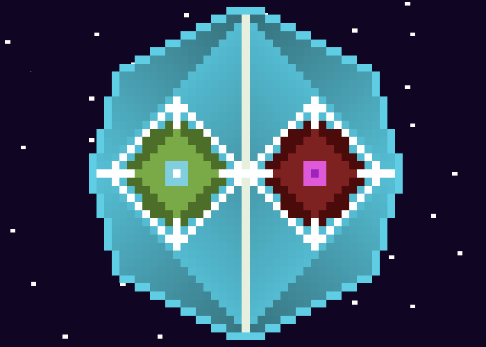
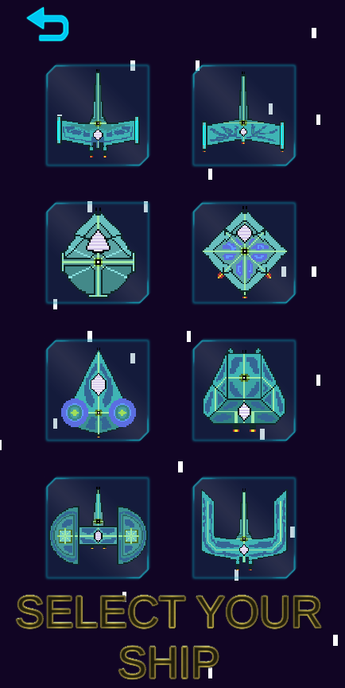
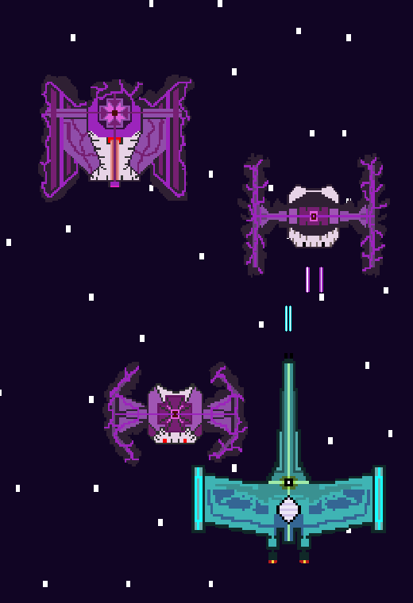
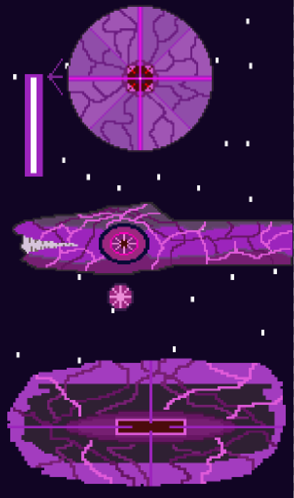

For Androıd
Açıklama : Unity kullanılarak programlanmış uzay temalı 2D bir android oyunudur. Oyunda 9 aşama vardır. Her aşamada karşımıza gelen uzay gemilerinin yok edilmesi gerekmektedir. Her 3 aşamada bir dev uzay yaratıkları ile savaşmalı ve evreni kurtarmalıyız.
Son Sürümü İndir : Play Store üzerinden indirmek için tıklayın.
Çıkış Tarihi :
Son Değiştirilme Tarihi :
Sürüm :
Bir zamanlar galaksinin birinde Gelişim Birliği tarafından bir kristal bulundu. Bu kristal, içinde hem düzeni hem de kaosu barındırıyordu. Gelişim Birliği, kristali kullanarak gezegenlerindeki yaşam şartlarını iyileştiriyor ve her şeyi evrimleştiriyorlardı. Ancak kristalin gücünü çok fazla zorlamışlardı ve aşırı kullanıma dayanamayan kristal parçalandı.Yaşam Maddesi ile Karanlık Madde ortaya çıktı. Yaşam Maddesi'nin gücü hala kullanılabilirdi. Karanlık Madde ise çok kararsızdı ve kontrol etmesi zordu. Bununla baş edemeyen Gelişim Birliği, Karanlık Madde'yi uzaya fırlatmaya karar verdi. Farkında olmadıkları şey, bu maddelerin kendi iradelerinin olmasıydı. Karanlık Madde, sonunda gücünü serbest bıraktı ve karanlık boyuta bir kapı açtı.

Gelişim Birliği'ne ait uzay araçları arasından istediğini seç.

Gelen yaratıklardan sakın veya onları yok et. Yaratıklara çarpmamaya dikkat et. Her çarptığında gemin hasar alır ve sonunda yok olursun. Yok ettiğin her yaratıktan parçacık elde edersin ve zamanla kendi gemin gelişir.

Galaksinin güvenliğini tekrardan sağlamak için Karanlık Madde'nin sebep olduğu tehlikeleri yok etmen gerekiyor.
Boyut Kapısı. Düşman yaratıkları çağırır.
Kara Solucan. Düşman yaratıkları çağırır ve enerji topu fırlatır.
Karanlık Madde. Düşman yaratıkları çağırır ve lazer ışını ile ateş eder.

(Dosya konumu : Android -> data -> com.saribayirdeniz.SpaceshipStarcraft -> files -> save.data)